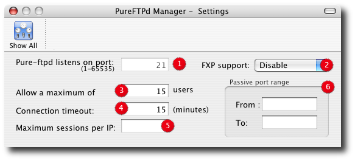

PureFTPd Manager - Settings

2. FXP allows transfers between two remote servers without any file data going to the client asking for the transfer. It is disabled by default and can be restricted to authenticated users only. 3. Maximum number a simultaneous users allowed. 4. Use this to specify how long the server should wait before it drops out inactive connections. 5. Restricts the maximum number of sessions per IP. 6. The passive port range box is useful to help you setup your FTP server if it resides behind a firewall. Read the Firewall Configuration pages for more. |